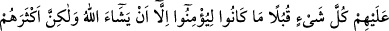

İMAN ETMEK İÇİN
MÛCİZE İSTEYENLER
109. Kendilerine bir mûcize gelirse ona mutlaka inanacaklarına dair kuvvetli bir
şekilde Allah’a and içtiler. De ki: Mûcizeler ancak Allah katındandır. Ama mûcize
geldiğinde de inanmayacaklarının farkında mısınız?
110. Yine O’na îman etmedikleri ilk durumdaki gibi onların gönüllerini ve
gözlerini ters çeviririz. Ve onları şaşkın olarak azgınlıkları içerisinde bırakırız.
111. Eğer biz onlara melekleri indirseydik, ölüler de onlarla konuşsaydı ve her
şeyi toplayıp karşılarına getirseydik, Allah dilemedikçe yine de inanacak değillerdi;
fakat çokları bunu bilmezler.
112. Böylece biz, her peygambere insan ve cin şeytanlarını düşman kıldık.
(Bunlar), aldatmak için birbirlerine yaldızlı sözler fısıldarlar. Rabbin dileseydi onu
da yapamazlardı. Artık onları uydurdukları şeylerle başbaşa bırak.
113. Âhirete inanmayanların kalpleri ona (yaldızlı söze) kansın, ondan
hoşlansınlar ve işledikleri suçu işlemeye devam etsinler diye (böyle yaparlar).
Rivayet edildiğine göre Kureyşliler: “Ey Muhammed, sen bize Musa (a.s.)’ın bir asası
olduğunu, bu asâ ile taşa vurunca on iki pınar fışkırdığını, İsa (a.s.)’ın ölüleri
dirilttiğini, Salih (a.s.)’ın dağdan deve çıkardığını haber veriyorsun. Sen de bize açık
bir mûcize göster. Eğer böyle yaparsan seni doğrular ve sana inanırız.” dediler. Bu
sözlerinin üzerine yemin ettiler ve yeminlerini kuvvetle tekid ettiler.
Bunun üzerine Hz. Peygamber (a.s.): “Nasıl bir mûcize istersiniz?” dedi. Kureyşliler